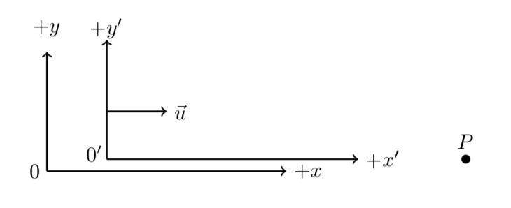
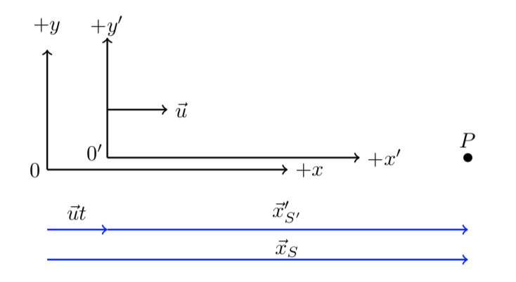
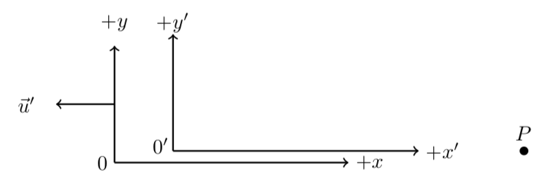

C5.1 Galilean Relativity: Coordinate Transformation#
C5.1.1 Motivation#
Galilean Relativity is a way to relay events and coordinates in classical mechanics. It is the framework in which Newtonian dynamics exists and is what we are familiar with from everyday life.
Example 1: Person Walking on Train
A person is standing still on the ground and observe a train passing by at 40.0 mph (it is always a train but at least it is not spherical). On–board the train a second person is sitting still while a third person is walking in the aisle. The person sitting on the train observes the person walking at a pace 3.00 mph in the same direction as the train is traveling. The person on the ground will observe the person walking at a rate at 43.0 mph. This is our common sense answer and is also the answer we will get if we apply Galilean relativity.
The mathematical frame work for Galilean Relativity is the 3D Euclidean space \(\mathbb{R}^3\) where a point is described by 3 real numbers referred to as the Cartesian coordinates. In terms of linear algebra, our classical laws of physics are formulated within a vector space (more precisely: an inner product space) associated to the 3D Euclidean space and we can define the Euclidean norm which is the length of any vector in this vector space. This allows us to define the Euclidean distance as the length between two points and is equivalent to the magnitude of our displacement vector when thinking about an object being displaced from one location to another.
In Newtonian physics, we are considering interactions (or lack of) acting on objects in both space and time, and we can refer to events to describe our observations. Hence, our events require three position coordinates (\(x\), \(y\), \(z\)) or a position vector \(\vec{r}\) with respect to a reference frame and a time coordinate \(t\) with respect to an observer clock.
C5.1.2 Derivation of Galilean Coordinate Transformation#
Consider to observers (\(S\) and \(S'\)) standing still at the origin in each of their respective reference frames, and let \(S'\) travel with a constant velocity of \(\vec{u}\) relative to \(S\) (the choice of “u” will become evident later). Notice that \(\vec{u}\) is the velocity of \(S'\) measured by \(S\). An event in \(S\) will be described by \((\vec{r},t)\) while the same event in \(S'\) is described by \((\vec{r}',t')\).
In this derivation, we will simplify the approach to focus on the important physics, but realize that in a practical situation there may be additional factors we must take into account (as we make our simplifications, we will know what those are).
We consider a single event: the measurement of the position of a point \(P\).
The coordinate systems \(S\) and \(S'\) are aligned such that they have common \(x\), \(y\), and \(z\)-axes. (If there were not aligned, they could be aligned through rotations about the principal axes).
We only consider linear motion and let \(S'\) travel with a constant velocity \(\vec{u}\) in the positive \(x\)-direction relative to \(S\).
When the two observers (or origins) pass each other (\(x = x' = 0\)) they synchronize their clock’s such that \(t_0 = t'_0 =0\) at that instant.
The majority of the above simplifications/assumptions are simply removing constant off-sets from our analysis. For example, if the clocks are not synchronized, the two time measurements \(t\) and \(t'\) would not be the same. Say, an observer in California makes an observation of a point \(P\) in Utah, while an Utah-based observer makes the same observation at the same instant. Their times would be off by 2 hour due to the time zones. It would not be an issue for the two observers to agree on the time when the off-set was taken into account. Similarly, synchronizing the clocks when the two origins coincide removes a spatial position off-set. Make sure you understand how these assumptions impacts our analysis. Now, on to the important stuff. The figure below illustrates the setup we are working with.
Observer \(S\) is going to measure a position vector \(\vec{x}_S\) at \(t\), while observer \(S'\) is measuring a position vector \(\vec{x}'_{S'}\) at \(t'\). Depending on the time of measurements, the two observers are separated in distance. In fact, observer \(S\) is going to see observe \(S'\) move away a displacement of \(\vec{u}t\). The figure below sketch these displacements onto the sketch from above
By virtue of graphical vector addition (think of “head-to-tail”), we have that
This is our Galilean coordinate transformation for 1D motion!
Your teacher was waiting at Maibara Station to board the Kodama shinkansen for Osaka when the Nozomi shinkansen blasted through at \(350.0\) km/hr. Exactly twenty seconds later a bolt of lightning struck the rail road tracks \(3.00\) km from the station in the same direction as the train was traveling.
Identify the \(S\) and \(S'\) reference frames.
Which variable in Equation (1) does the value \(3.00\) km corresponds to?
Find the location coordinate of the lightning flash as observed by a stationary observer on-board the Nozomi.
# DIY Cell
Show code cell source
%reset -f
import sympy as sym
# Part 1
print('Let S be the ground-based observer and S\' be an observer at rest on the train')
# Part 2
print(' ')
print('The 3.00 km is the position of the event as measured in S')
# Part 3
xs = 3.00e3
t = 20.0
u = (350.0)*(1000/1)*(1/3600)
xs_prime = sym.Symbol('xs_prime')
eq = xs - xs_prime - u*t
sol = sym.solve(eq, xs_prime)
xs_prime = float(sol[0])
xs_prime = "{:.2e}".format(xs_prime)
print(' ')
print('Location in S\': '+str(xs_prime)+' m')
Show code cell output
Let S be the ground-based observer and S' be an observer at rest on the train
The 3.00 km is the position of the event as measured in S
Location in S': 1.06e+03 m
C5.1.3 Further Considerations#
The principle of relativity requires that the form of the transformation from \(S\) to \(S'\) must be identical to that from \(S'\) to \(S\). Let us take this as an opportunity of learning to go through the above process, but with the perspective from \(S'\). I have been so kind as to prepare the sketch for you.
In this case, we consider a single event: the observation of a single point \(P\) along a common \(x\)-axis (pretty much restricting ourselves to 1D). Let \(S\) travel with a constant velocity \(-\vec{u}\) with respect to \(S'\). For simplicity we will assume the two observers synchronize their clock’s such that when they pass each other they set \(t_0 = t'_0 =0\). The above sketch shows the scenario. Following the same approach as we did earlier, complete the following:
Make a sketch like shown above and sketch in the following three vectors: \(\vec{x}_s\), \(\vec{x}'_{S'}\), and \(\vec{u}'t'\).
Perform vector addition of the three vectors to write an expression for \(\vec{x}'_{S'}\). Comment on the form of the equation in comparison to Equation 1.
Use your result in (2) but write the expression for \(\vec{x}_S\) instead.
Use the relation \(\vec{u}' = -\vec{u}\) to write the expression in (3) using \(-\vec{u}\) instead of \(\vec{u}'\). Did you get the same as in Equation 1?
We can put down a few points of observations:
We recognize that the transformation equations (1) and Box 2 part (4) are of same form with \(S\) and \(S'\) switched and substituting the relative velocity \(\vec{u}\) with \(-\vec{u}\). This is a consequence of the principle of relativity.
If the point \(P\) was not restricted along the \(x\)-axis but had non-zero \(y\)- and \(z\)-components, we would have \(y = y'\) and \(z = z'\) since the relative motion was restricted to 1D motion of the \(S'\) frame relative to \(S\). The transformation only affects coordinates in the direction of relative velocity.
If we did not restrict ourselves to 1D relative motion, but allowed relative motion in 3D, we could break the analysis into three identical analyses in \(x\), \(y\), and \(z\) just as we did above to obtain similar answers for the respective directions.
We actually have two events required here in order to transform the coordinate between the two observers. Since the displacement between the two observers depend on the elapsed time between the time of common origin and the time of observation of the point \(P\). The time \(t\) in the equation is actually \(\Delta t = t - t_0\), but we conveniently synchronized the clocks at \(t = t' = 0\) such that \(t_0 = 0\).
Based on the above observation, we assume that the elapsed time is the same in both reference frames. This is a valid assumption from every day life. If 10 seconds elapsed on your clock, I will assume 10 seconds elapsed on my clock as well (provided that both clocks are in good working conditions, of course ;) . Hence, we assume that \(\Delta t = \Delta t'\). This is where Galilean relativity goes wrong and is corrected with special relativity.
It may appear to extensive to use both superscripts and subscripts for \(x'_{S'}\) but the reason will hopefully become clear as you get into detailed special relativity.
C5.1.4 Toolbox Summary#
With these observations in mind, let us summarize the Galilean Coordinate Transformations:
In the first transformation, \(\vec{r}_S\) is the position measured by observer in \(S\), \(\vec{r}_{S'}\) is the position as seen by observer in \(S'\), \(\vec{u}\) is the velocity of \(S'\) as seen by observer \(S\), and \(\Delta t\) is the elapsed time as measured by \(S\). For the second transformation, the point of views are switched around.
We notice that we are mixing observations from two different reference frames. This is the result from Galilean transformation and works for most everyday events. We shall see that mixing these observation frames is what gives us the wrong results if we were to apply them to special relativity.
Off-set#
In the above, we assumed the origin of the reference frames coincided at \( t = t' = 0\). If that is not the case, we will need to take into account an off-set at \( t = t' = 0\):
where \(\vec{r'}_{S,off}\) is the offset of \(O'\) with respect to \(O\) and vice versa.
Your teacher was waiting at Maibara Station to board the Kodama shinkansen for Osaka when the Nozomi shinkansen blasted through at \(350.0\) km/hr. Exactly 3 seconds later a bird was seen tumbling through the air, due to the passage of the train, \(30.0\) m down the tracks in the direction of the train motion as observed from the station. From the station, the bird was estimated to be at a height of \(20.0\) m right above the tracks. From the passenger on-board the train, what was the position vector of the poor bird?
# DIY Cell
Show code cell source
%reset -f
import numpy as np
u_prime_x = (-350.0)*(1000/1)*(1/3600)
u_prime_y = 0.0
u_prime = np.array([u_prime_x, u_prime_y])
dt_prime = 3.0
rx = 0.0
ry = 20.0
r = np.array([rx,ry])
r_prime = r + u_prime*dt_prime
print('Bird position from S\': '+str(r_prime)+' m')
Show code cell output
Bird position from S': [-291.66666667 20. ] m
Your teacher was waiting at Maibara Station to board the Kodama shinkansen for Osaka when the Nozomi shinkansen blasted through at \(350.0\) km/hr eastward. At the same instant, an airplane was flying above the station at an altitude of \(10.0\) km with a speed of \(700.0\) km/hr and in a direction \(20.0^\circ\) north-of-east. Exactly twenty seconds later a bolt of lightning struck the rail road tracks \(3.00\) km from the station in the same direction as the train was traveling. What were the coordinates (in km) of the lightning strike as seen from the airplane?
# DIY Cell
Show code cell source
%reset -f
#station observer is S
#airplane is S'
import numpy as np
angle = np.radians(20.0)
u_prime_x = (-700.0)*(1000/1)*(1/3600)*np.cos(angle)
u_prime_y = (-700.0)*(1000/1)*(1/3600)*np.sin(angle)
u_prime_z = 0.0
u_prime = np.array([u_prime_x, u_prime_y, u_prime_z])
rx = 3.00e3
ry = 0.0
rz = 0.0
r = np.array([rx, ry, rz])
r_off = np.array([0, 0, -10000])
dt_prime = 20.0
r_prime = r_off + r + u_prime*dt_prime
print('Lightning position from plane: '+str(r_prime)+' m')
Show code cell output
Lightning position from plane: [ -654.36019195 -1330.07833516 -10000. ] m